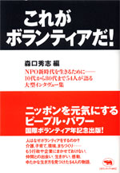

|

|
ボランティア・NPO |
||
| これがボランティアだ！ | |||
| 森口秀志 編 | |||
|
A5判並製 384 頁 |
|||
| 定価2520円（本体2400円） | |||
| ISBN4- 6494-3 C0036 | |||
| 人はなぜボランティアをするのか。生きがい？ 自己実現？ ネットワークづくり？ 自然・環境、子ども、福祉、災害、人権、文化、情報、まちづくり……10代から80代まで、さまざまな現場で生き生きと活躍する50人の生の声を聞きとった大型インタヴュー集。地域の支えあいからＮＰＯ・ＮＧＯまで、新しい生き方を選択した人々の熱い言葉から、今ニッポンが抱えるあらゆる問題が鮮やかに浮かびあがる。国際ボランティア年記念出版。 |
|
|
エッセイ・美術 |
||
| 全面自供！ | |||
| 赤瀬川原平 聞き手 松田哲夫 | |||
|
A5 判並製 512頁 |
|||
| 定価2982円（本体価格2840円） | |||
| ISBN4-7949-6431-5 C0095 | |||
| 赤瀬川原平の語り下ろしの自伝である。三十年にわたる友人の聞き手は松田哲夫。赤瀬川原平のラディカルな面が次々と暴かれていく。存在そのものがオブジェだった「ハイレッド・センター」時代からニセ千円札事件。路上観察での南伸坊や藤森照信らとの付き合い。『老人力』などの最近の活躍。大好きなカメラのこと……。学生時代の作品も含め40点ほどの作品も掲載。赤瀬川原平のすべてがわかります |